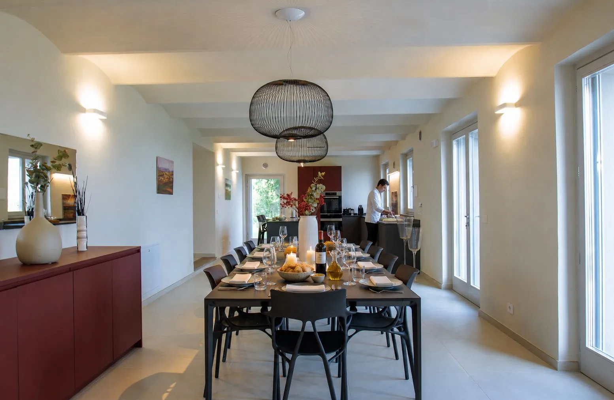

Lunes 19 · Día 1
La llegada y la primera mesa
Las llegadas son por la tarde. Un brindis de bienvenida con Alta Langa y la luz baja sobre los viñedos dan la pauta de lo que viene, con tiempo para instalarse sin apuro antes de la primera cena. Al caer el sol, la mesa larga ya está puesta: el Chef Privado abre la semana con los grandes clásicos del Piamonte —vitello tonnato, agnolotti del plin, brasato al Barolo, bonet— mientras el sommelier presenta, copa a copa, los vinos que nos acompañarán los próximos días. Es la cena en la que el grupo se conoce.
